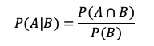

3.8- Qué es una probabilidad condicional
Anteriormente revisamos que cuando trabajamos con probabilidades estas pueden darse para eventos dependientes y para eventos independientes. La probabilidad condicional es la probabilidad de que un evento suceda dado que otro evento ya ocurrió. Si el evento en el que estamos interesados es A y el evento B es conocido, la probabilidad condicional se denota como P(A|B) es decir la probabilidad de A dado B. Esta probabilidad se da cuando dos eventos son dependientes de manera que la P(A ∩ B) = P(A) * P (B). Si los eventos son independientes entonces la P(A|B) = P(A).

Donde P(A│B) representa la probabilidad de A dado que B ha ocurrido. P(A∩B) Representa la probabilidad de la intersección y P(B) Representa la probabilidad del evento B.
Solo es de interés el resultado si se cumple B y la P(B) debe ser > 0. Únicamente los elementos de la intersección podrían hacer que se cumpla B, por tanto deben haber elementos en común. Ojo aquí el orden es importante, la P(A|B) no es igual que la P(B|A) (porto y gardey, 2019). Es importante aclarar que en la probabilidad condicional no necesariamente puede haber una relación temporal o causal entre los dos componentes, esto quiere decir que A puede producirse antes que B, después o al mismo tiempo y que A puede ser el origen de B o viceversa o no tener ningún tipo de relación.
Por ejemplo, un investigador toma una muestra de 100 fincas de una región de la costa colombiana. De esas 100 fincas 80 tienen producción ganadera y 45 tienen producción ganadera y reforestadora a la vez y 20 son exclusivamente reforestadoras. ¿Cual será la probabilidad de encontrar una finca que tenga actividad reforestadora cuando en principio ha sido seleccionada una finca ganadera?
- Espacio muestral: 100 fincas de la costa colombiana
- P(A ∩ B)= 45/100
- P(B) = 80/100
P(A|B)= 0.45/0.80 = 56%
Entonces hay un 56% de probabilidades de que la finca seleccionada sea también reforestadora si la finca seleccionada inicialmente es ganadera.
3.9- Regla de la probabilidad total
La regla o teorema de la probabilidad total permite calcular la probabilidad de un evento a partir de varias probabilidades condicionadas. Por ejemplo si buscamos la probabilidad de encontrar un animal afectado con mastitis clínica (MC) en un conjunto de animales que tienen una característica determinada (vacas con altos niveles de células somáticas -CCS- en la leche) y su complemento (vacas con bajos niveles de células somáticas en leche). Entonces para cualquier conjunto de A (probabilidades de A o seleccionar el animal afectado con MC), estaría dado por la unión de varios conjuntos mutualmente excluyentes B1, B2 ... Bn (animales con elevado número de CCS + animales con bajo número de CCS), su probabilidad es igual a la siguiente suma:
Donde
- P(A) es la probabilidad de que ocurra el evento A
- P(A│B1)es la probabilidad condicional de A dado que B1 ha ocurrido
- P(B1) es la probabilidad de que B1 ocurra.
- P(A│Bn) es la probabilidad condicional de A dado que B
n ha ocurrido. - P(Bn) es la probabilidad de que Bn ocurra.
En un estudio de epidemiologia se encuentra que, de una muestra aleatoria de 100 hatos, el 60% tienen niveles adecuados de SCS (≦4), mientras que el 40% restantes tiene niveles superiores a 4 por tanto muy elevados. De los hatos con adecuados niveles de CCS la prevalencia de Mastitis Clínica es del 15%, mientras que en los hatos con altos niveles de CCS la mastitis clínica esta presente en un 33%. ¿Si seleccionamos al azar en estos hatos cual es la probabilidad de escoger un animal positivo para mastitis clínica?
Probabilidad de Mastitis = P (mastitis|bajo SCS) * P(bajo SCS) + P(mastisis|alto SCS) * P(alto SCS)
=(0.15*0.60)+(0.33*0.40)
= 0.09+0.132=0.22
Hay una probabilidad del 22% de que el animal seleccionado esté afectado con mastitis.
3.10- Regla de la adición de las probabilidades
Esta regla calcula la probabilidad de la unión de un evento A y un evento B y está basada en la probabilidad de los conjuntos individuales, calculando el tamaño de la unión y descontando el tamaño de la intersección.
P(A∪B) =P(A) +P(B) -P(A∩B)
- P(A∪B) = Probabilidad de la Unión
- P(A∩B) = Probabilidad de la Intersección.
Ejemplo, en un análisis de casos en una clínica veterinaria se encontró que el 15% de los pacientes caninos que atendieron consulta el año anterior eran hipertensos. El 6% fueron pacientes con fallo renal y el 3% de los casos atendidos presentaron ambos. ¿Que probabilidad existe de que se selecciones un paciente sea hipertenso o con fallo renal?
P(Hipertenso ∪ Fallo Renal) = 0.15 + 0.6 – 0.3
P(Hipertenso ∪ Fallo Renal) = 0.18%
Entonces la probabilidad de encontrar un paciente ya sea hipertenso o con fallo renal en análisis es del 18%.
3.11- Regla de la multiplicación de las probabilidades
Esta regla nos permite encontrar la probabilidad de que ocurra el evento A y el evento B. Existen dos casos dependiendo si los eventos son dependientes o independientes
3.11.1- Eventos dependientes
𝑃(𝐴∩𝐵) =𝑃(𝐴|𝐵) ×𝑃(𝐵)
Donde la probabilidad esta dada por la probabilidad de A dado que B ocurrio y multiplicado por la probabilidad de B.
Si voy a sacar dos novillas de un corral donde hay 4 blancas, 5 pardas y 2 negras, cual es la probabilidad de que la segunda novilla sea negra sabiendo que la primera también fue negra (no hay reemplazos dentro del corral).
El espacio muestral total es 4+5+2 = 11 novillas, entonces,
En la primera sacada hay dos novillas negras de un total de 11 novillas. En la segunda hay 1 de un total de 10 novillas, entonces, la posibilidad de que salgan los dos animales negros en primer y segundo lugar es apenas del 1.8%.
3.11.2- Eventos independientes
Son independientes cuando la ocurrencia de uno de ellos no afecta la ocurrencia del otro.
P(A∪B)=P(A)*P(B)
donde la Probabilidad esta dada por la probabilidad de A multiplicada por la probabilidad de B
Supongamos que en una finca hay 100 novillas de las cuales 35 son Holstein. De las 100 novillas 75 han sido inseminadas por primera vez. El hecho de que la novilla sea Holstein no tiene nada que ver con que haya sido inseminada o no. Ahora nos interesa saber cuál es la probabilidad que una de las novillas Holstein haya sido inseminada?
La probabilidad de seleccionar una novilla Holstein que haya sido inseminada dentro de la totalidad de las 100 novillas el del 26%.
3.12- El teorema de Bayes
El teorema de Bayes es utilizado para calcular la probabilidad de un suceso, teniendo información de antemano sobre ese suceso (Lopez,2018) . Nos ayuda a encontrar una relación causal entre dos eventos, es decir nos ayuda a buscar argumentos mas razonables acerca de que evento puede causar el otro.
La forma simple del teorema de Bayes es:
donde:
Donde A y B son eventos y B ≠ 0.
P(A│B) es la probabilidad de A dado que ha ocurrido el evento B.
P(B|A) es la probabilidad de B dado que ha ocurrido el evento A.
Por ejemplo tenemos una finca lechera de alta producción donde todos los animales han sido genotipificados. Revisando los genotipos encontramos que el 68% de los animales son de alta producción y dentro de este grupo de alta producción el 26% tienen alta resistencia a Mastitis. De igual manera revisamos los genotipos para alta resistencia a mastitis y encontramos que el 22% del total de los animales cumplen con esta característica. Quisieramos saber, de los animales con alta resistencia a mastitis en que porcentaje tambien son de alta producción?
A: animales de alta producción= 68%
B: animales de alta resistecina a mastitis= 22%
(B|A): animales de alta resistencia a mastitis dado que son de alta producción: 26%
(A|B): animales de alta producción dado que son resistentes a mastitis: ?
Entonces la probabilidad de que un animal sea de alta producción dado que genotipicamente es de alta resistencia a mastitis es del 82%. Es un punto muy interesante para hacer selección de ganado, ya que la mayoría de productores siempre se enfocan solo en producción y no dan mucha importancia a la selección de caracteres por salud.
Referencias
- Julián Pérez Porto y Ana Gardey. Publicado: 2019. Actualizado: 2021. Definicion.de: Definición de probabilidad condicional
- * Chao, L.L., 1978. Estadística para las ciencias administrativas. McGraw-Hill Interamericana.
- * Pfaffenberger, R.C. and Patterson, J.H., 1977. Statistical methods for business and economics. Homewood, IL: Richard D. Irwin.
- López José Francisco , 21 de febrero, 2018, Teorema de Bayes. Economipedia.com